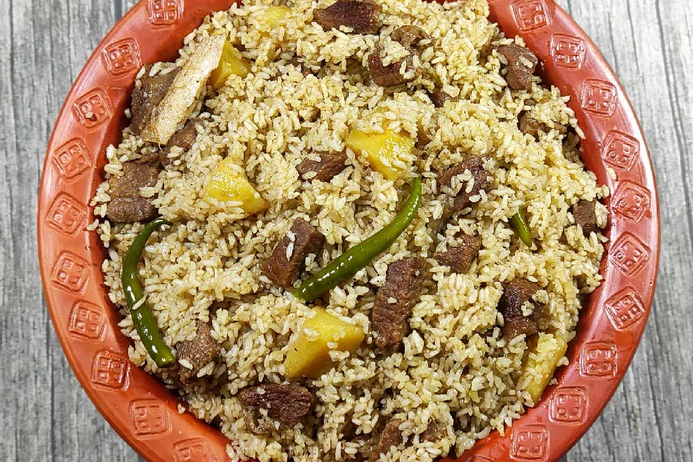

Beef Tehari

Tehari is a rice dish that is almost always made with beef in Bangladesh.
With mustard oil, authentic old Dhaka tehari is prepared.
In the Indian subcontinent
(India, Pakistan, and Bangladesh) cuisine, beef tehari is extremely popular.
Ingridients
Spice Blend/Grind
- 2-1 pieces cinnamon
- 1/3 pieces nutmeg
- 2-3 pieces mace
- 10-12 pieces white pepper
- 4-5 pieces cardamom
- 4-5 pieces cloves
For Cooking
- 1kg beef (small pieces)
- 3 cups polao rice
- 1 cup mustard oil
- 2 pieces bay leaves
- 2-1 pieces cinnamon
- 3-4 pieces cardamom
- 1/2 cup onion
- 2 tablespoon ginger paste
- 1 tablespoon garlic paste
- 1 teaspoon red chili powder
- 1 teaspoon coriander powder
- 1 teaspoon salt
- 2 pieces medium potatoes
- 7 cups of hot water
- 1.5 tablespoon salt
- 10-12 pieces green chilli
- 1/2 teaspoon keora water(rose water)
Steps
- Grind cinnamon, nutmeg, mace, white pepper, cardamom, and cloves together into a smooth powder.
- Soak rice in the water for 10 mins.
- Heat mustard oil in a pan. Add bay leaves, cinnamon, and cardamom.
- Then add onion slice and saute until light brown.
- Add garlic paste, ginger paste, coriander powder, and red chili powder and fry until the raw smell disappears.
- Wash, drain, and add beef.
- Mix well and add salt. Keep stirring for 2-3 mins.
- Add the ground spice blend and stir for 2-3 mins.
- Close the lid and cook for 20 minutes. Stir occasionally.
- Cut the potato into small cube pieces and add them.
- Close the lid and cook for 5 minutes. Stir occasionally.
- Add 1 cup of hot water. Stir and close the lid. Cook for 30 mins.
- Remove only the beef and potatoes from the pan, not the gravy.
- Wash, drain, and add rice to the gravy.
- Give a good mix and fry for 3-4 minutes.
- Add 6 cups of hot water and salt.
- Stir and close the lid. Cook for 5 mins.
- When the water is reduced a bit add the beef and potato pcs. Give a good mix.
- Add green chili, and close the lid. Close the hole with cinnamon to seal the air. Cook for 2-3 mins.
- Add the kewra water and cook on low heat for 15-20 mins. Mix and keep it under low heat for another 10 mins.